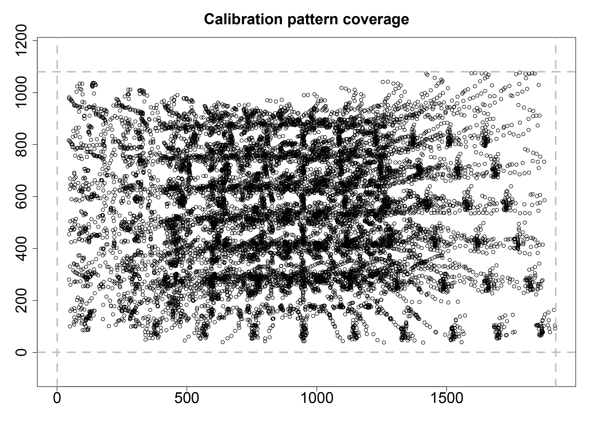
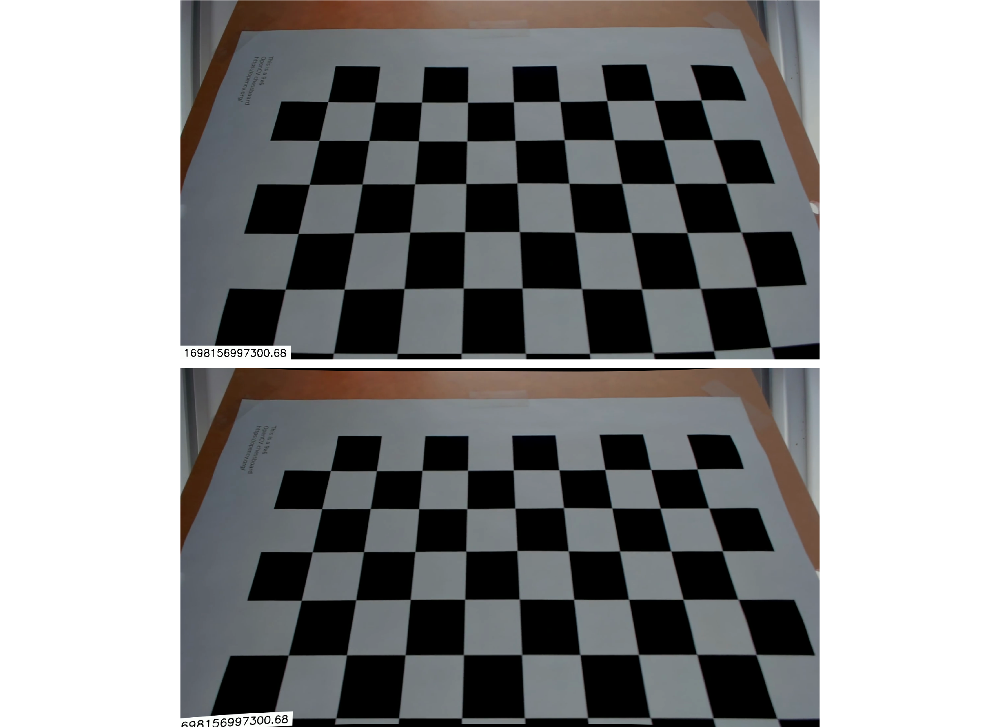

8.1 - Camera calibration
Starting with Rvision 0.7.1, users can perform basic
camera calibration steps to correct lens distortion. This can be
particularly useful when working with cameras that have a wide field of
view (e.g., GoPro cameras) and when performing photogrammetry.
In this vignette, we will briefly describe the calibration process
and provide an example of how to calibrate a camera using
Rvision.
8.2 - Calibration process
8.2.1 - Calibration pattern
The calibration process is relatively straightforward. First, the
user must capture a series of images of a calibration target. The
calibration target should be a planar surface with a regular pattern of
points (at the time of writing, Rvision only supports a
checkerboard pattern). You can find a sample calibration target provided
with the Rvision package at the following location in your
hard drive:
system.file("sample_img/checkerboard6x9.png", package = "Rvision")You can print this image and use it as a calibration target, or you can create your own as long as it represents a checkerboard pattern.
Once the target is ready, you should take a series of images of it
using the camera that you want to calibrate. The target should be placed
at different distances from the camera and at different angles. The
target should also be rotated about the camera’s optical axis. An
example video of a calibration target being used to calibrate a webcam
is provided with the Rvision package at the following
location in your hard drive:
system.file("sample_vid/calibration.mp4", package = "Rvision")We will use this video to demonstrate the calibration process.
8.2.2 - Calibration steps
8.2.2.1 - Setting the calibration pattern parameters
The first step in the calibration process is to set the calibration pattern parameters. These parameters are used to detect the calibration pattern in the images and provide a correspondence between the calibration pattern points and their image coordinates.
# Checkerboard inner dimensions, i.e., the number of inner corners formed by the
# checkerboard pattern. In this case, the checkerboard has 7x10 squares and,
# therefore, 6x9 inner corners.
cdims <- c(6, 9)
# Size of a checkerboard square in mm.
ssize <- 22.71
# Checkerboard real-world relative coordinates. The first point is the origin
# and the remaining points are the coordinates of the remaining inner corners.
# Since the checkerboard is planar, the z-coordinate is always 0.
checkerboard <- as.matrix(
expand.grid(
x = 0:(cdims[1] - 1),
y = 0:(cdims[2] - 1),
z = 0
)
) * ssize8.2.2.2 - Detecting the calibration pattern
The next step is to detect the calibration pattern in the video
frame. The script below illustrates how to do this with the example
video provided with the Rvision package. The different
steps are described in the comments. This process might not work for
your video depending on lighting and image quality, so you might have to
tweak the parameters. This process can also take a long time and you
might want to skip some frames to speed it up. A good rule of thumb is
to select frames that (1) show the calibration pattern clearly and (2)
show it at different angles and distances from the camera.
# Lists to store reference and image coordinates.
ref_points <- list()
img_points <- list()
# Location of the calibration video.
vid_file <- system.file("sample_vid/calibration.mp4", package = "Rvision")
# Load video and create temporary storage frames.
vid <- video(vid_file)
fr <- zeros(nrow(vid), ncol(vid), 3)
gray <- zeros(nrow(vid), ncol(vid), 1)
bw3 <- zeros(nrow(vid), ncol(vid), 3)
# Skip the first 25 frames that do not show the calibration pattern.
frame(vid) <- 26
# Loop through the video frames.
for (i in 26:nframes(vid)) {
# Read the next frame.
readNext(vid, fr)
# Threshold the frame. This is done by converting each pixel above the average
# pixel intensity to white and the remaining pixels to black. This is done to
# remove noise and to make the calibration pattern stand out. This is a very
# simple thresholding method and might not work for your video.
compare(fr, mean(mean(fr)), ">", bw3)
# Find the calibration pattern corners. This is done using the function
# called `findChessboardCorners`. The first argument is the image to be
# analyzed. The second and third arguments are the inner dimensions of the
# checkerboard pattern. The fourth argument is a logical value indicating
# whether adaptive thresholding should be used. This can be useful to improve
# the detection of the calibration pattern in images with uneven lighting.
# However, it can significantly increase the processing time. We will not use
# it in this example. The function returns a matrix with the coordinates of
# the corners. If the function is able to find all the corners, the number of
# rows in the matrix will be equal to the product of the inner dimensions.
corners <- findChessboardCorners(bw3, cdims[1], cdims[2], FALSE)
# If the function was able to find all the corners...
if (nrow(corners) == prod(cdims)) {
# Convert the frame to grayscale.
changeColorSpace(fr, "GRAY", gray)
# Refine the corner coordinates. This is done using the function called
# `cornerSubPix`. The first argument is the grayscale image. The second
# argument is the matrix with the corner coordinates. The function returns a
# matrix with the refined corner coordinates.
corners <- cornerSubPix(gray, corners)
# Store the reference and image coordinates.
ref_points[[length(ref_points) + 1]] <- checkerboard
img_points[[length(img_points) + 1]] <- corners
}
}You can visualize the coverage of the calibration pattern in the video frames as follows:
plot(do.call(rbind, img_points),
xlim = c(1, ncol(vid)), ylim = c(1, nrow(vid)), asp = 1,
xlab = NA, ylab = NA, main = "Calibration pattern coverage",
cex.main = 2, cex.axis = 2
)
abline(
v = c(1, ncol(vid)), h = c(1, nrow(vid)),
col = "gray", lty = 2, lwd = 3
)
In this particular example, the coverage is not perfect, but it is good enough for our demonstration purposes.
8.2.2.3 - Compute the camera parameters
The next step is to compute the camera parameters. This is done using
the function called calibrateCamera. The first argument is
the list of reference coordinates. The second argument is the list of
image coordinates. The third and fourth arguments are the dimensions the
video frames. The last argument is the maximum number of iterations to
be used by the optimization algorithm. The function returns a list with
the camera parameters. This step can some time, so be patient.
calib <- calibrateCamera(ref_points, img_points,
nrow(vid), ncol(vid), maxit = 10000
)You can now use the camera parameters to correct lens distortion in
the video. This is done using the function called
undistort.
# Read a frame from the video.
readFrame(vid, 250, fr)
# Create a frame to store the undistorted image.
fr_undist <- fr * 0
# Correct lens distortion.
undistort(fr, calib$camera_matrix, calib$dist_coeffs, target = fr_undist)
# Plot the original and undistorted images on top of each other.
conc <- concatenate(border(fr, 0, 25, 0, 0, border_color = "white"), fr_undist)
plot(conc)
Notice how the barrel distortion visible in the original image (top) is corrected in the undistorted image (bottom).
You can now save the camera parameters to a file for future use. We
recommend using the list.save function from the
rlist package to do this. You can later use the
list.load function from the same package to load the camera
parameters from the saved file.